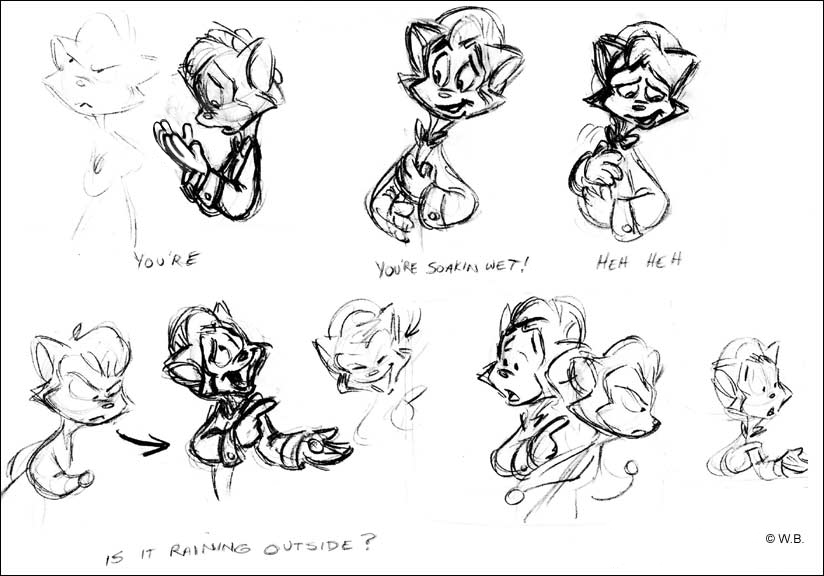
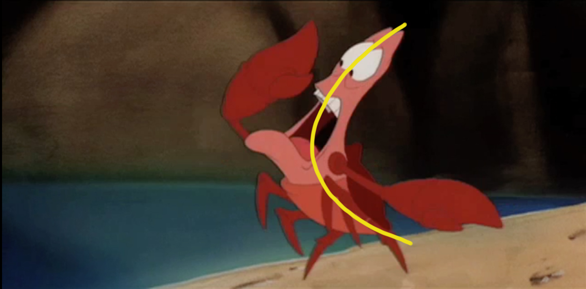
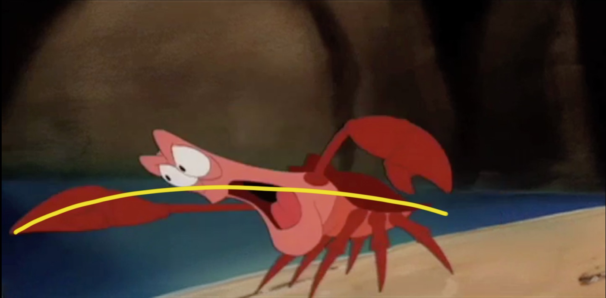
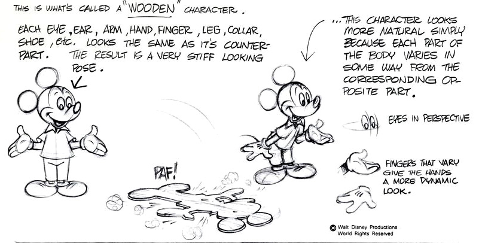
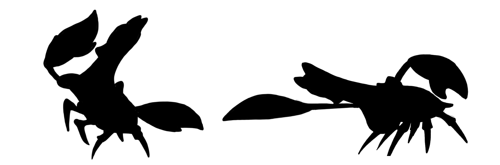

Solid Drawing
Solid drawing generally refers to the ability to render a three-dimensional character in two-dimensional space and give it weight, depth, and balance. Since the 12 Basic Principles of Animation were written before computer animation existed, the solid drawing principle is more fundamental for a traditional animator. In order to make his animation convincing, a traditional animator has to be able to draw a character from any angle. Although great draughtsmanship is not a necessity for a computer animator, an understanding of what makes a good drawing can definitely help. Maybe in this computer age, we should call this principle “Solid Poses.”
Line of Action
A strong line of action goes through the whole body, illustrates the force of the action, unifies the pose, and makes a clear statement. When possible, I try to reverse the curve of the spine from one main pose to the next. Here’s an example from a scene I animated for The Little Mermaid:

Twinning
It’s best to avoid symmetry in a pose. If the arms mirror one another, it can make the drawing look flat. Raise one arm or bring it closer to camera to make it more interesting and more dimensional. Here’s a great example from The Illusion of Life, by Frank Thomas and Ollie Johnston.
Silhouette
A clear silhouette helps the viewer to instantly understand a pose. You can get a surprising amount of information from just the silhouette—the gender, age, attitude, costume, etc. Hopefully you can recognize the character in these silhouettes:
